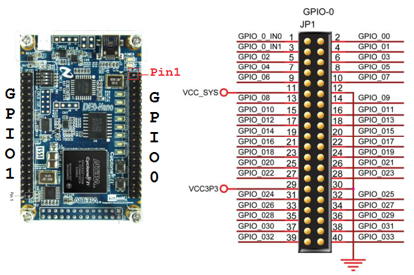

Adafruit currently sells a really cool 16x32 RGB LED matrix panel in their store that is "designed to be driven by an FPGA or other high speed processor." The purpose of this tutorial is to help you get started driving a small handful of these displays with the DE0-Nano board, which contains a mid-range Altera FPGA.
This tutorial assumes that you're already somewhat familiar with electronics, digital logic, editing source code, using IDEs, and installing Windows device drivers.
You need to have the Quartus II software installed on your computer. If not, you can download it from Altera's website or install it from the DVD that comes with the DE0-Nano board. You will also need to install the USB-Blaster drivers that enable your computer to communicate with the FPGA (see this short YouTube video).
On you are all set up and ready to begin, download the necessary files for this project from its GitHub repository (click on the "ZIP" icon).
Open the file vhdl/config.vhd in a text editor and change line 32 (constant NUM_PANELS...) to indicate the total number of LED panels you have daisy-chained together in your display. For example, if you are using a 1x2 or 2x1 grid, you will want to change the line to:
constant NUM_PANELS : integer := 2;
You may optionally edit line 33 (constant PIXEL_DEPTH...) in a similar manner to indicate how many bits-per-pixel you want to use. This will affect the level of brightness control available to you later. Finally, save the file!
Start Quartus II and open the "New Project Wizard" from the "File" menu. On the first page, name the project rgbmatrix-fpga (or something similar) and name the top-level entity top_level. Click Next.
Now we will add the source code files to the project. Click the "..." button to open the file browser and select the .vhd files in the vhdl folder you downloaded earlier (do not include the testbenches directory). Click "..." again and open the megawizard folder. Set the type drop-down menu to "All Files (*.*)" so you can select the .qip, .cmp, and megawizard_vjtag.vhd files (do not include megawizard_vjtag_inst.vhd). Add them to the project and click Next.
The FPGA chip in use on the DE0-Nano is the Cyclone IV EP4CE22F17C6N. You can find it by setting the device family to "Cyclone IV E", package to "FBGA", pin count to 256, and speed grade to 6. Select the chip and click Next.
Set the "Simulation" tool name to "ModelSim-Altera" and the format to "VHDL". Leave everything else as "<None>" and click Next.
Click Finish to create the project!
Now that the project has been created, you need to change two more settings before we can move on. Go to the Project Navigator panel in the top left area of Quartus and right click on the device ("Cyclone IV E: ..."). Select "Device" from the menu.
A window will open. Click "Device and Pin Options...". In the left hand side of the new window that comes up, open the "Unused Pins" category. Change the "Reserve all unused pins" settings to "As input tri-stated". This will essentially prevent the unused pins on the FPGA from doing anything unwanted on the DE0-Nano when we program the design.
Now select the "Voltage" category. Change the "Default I/O standard" to "3.3-V LVTTL". This is essential to do because the panels will not recognize a signal below this voltage.
Click OK, then click OK again.
Go to the "Assignments" menu and select "Import Assignments...". Import the de0-nano/rgbmatrix-fpga.qsf file. After you do this, a message should appear in the "System" console tab at the bottom of Quartus: "Import completed. 14 assignments were written (out of 14 read)."
You can (optionally) customize the pin assignments that were imported by going to the "Assignments" menu and selecting "Assignment Editor". Additional information on the GPIO headers can be found in the DE0-Nano PDF manual (pages 18-20). A machine-readable mapping of FPGA pins to GPIO headers can also be found in the de0-nano/DE0_Nano.qsf file (open it with a text editor).
Save any changes. Now we are ready to connect the pins on the FPGA to the pins on the RGB LED matrix panel!
Please refer to the Adafruit guide for wiring details on the panel side. You may want to use female-female jumper wires to make the connections between the IDC pins!
Important: DOUBLE-CHECK ALL YOUR CONNECTIONS BEFORE POWERING ON! Be sure the board's orientation matches the diagrams when you connect the wires!
To synthesize the design, go to the "Processing" menu and select "Start Compilation", or click on the purple arrow icon in the toolbar. Synthesis should be quite fast since the design is small. After compilation is successful, you should have a new .sof file in your Quartus project directory. It should be 703,642 bytes long.
Plug in your DE0-Nano board via the USB connector. Now, go to the "Tools" menu and select "Programmer".
In the top left of the window that appears, you should see "USB-Blaster [USB-0]". If instead you see "No Hardware", click on "Hardware Setup..." and (re-)select your device.
Now, select the .sof file in the list, ensure "Program/Configure" is checked, and click "Start"! This should take about a second.
The FPGA is now programmed with your design! (This only programmed the SRAM though, not the onboard EEPROM — so the design is only stored until power is turned off.)
Note: In the future, you can use the command script de0-nano/program.cmd to quickly program the FPGA's SRAM with your .sof file (it uses the Quartus command line programming utility).
Open the command script tcl/run.cmd in a text editor and ensure that the path to the quartus_stp executable is correct. Then, double click the script to launch the Virtual JTAG interface server (tcl/vjtag_server.tcl). This binds to a TCP port to allow programs and scripts to write data to the FPGA through Altera's Tcl API. This allows you to send video to the FPGA from any device that can communicate over the network! For example, a remote Arduino with a Wi-Fi shield, or an Android cellphone.
Two demos written in the Processing programming language (a dialect of Java) are available in the processing folder. You can run either demo by copying its directory to your local sketchbook folder (usually ~/Processing). The first demo, Chaser is a basic test animation. The second demo, Magnify sends a real-time screen capture to the panels through the FPGA.
Note: When running the Processing demos, it is important to change the panelsWide and panelsTall constants at the top of the sketch to match your panel configuration! Otherwise, the sketch will not work properly.
Both demos contain a copy of vjtag_client.pde which you can use to make you own Processing sketch that communicates with the board! In addition, the "protocol" that is used to interact with the Virtual JTAG server is extremely simple, and can easily be ported to another language such as Python.
That's it! I hope this tutorial was useful to you. Please feel free to fork this project on GitHub and contribute back any modifications or improvements! Thanks!